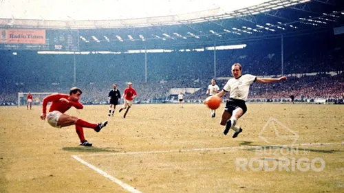
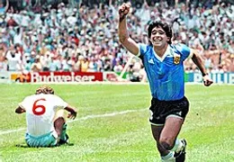
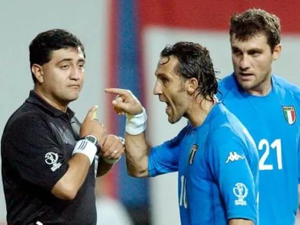
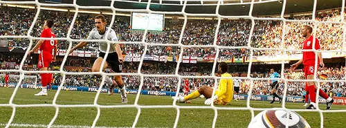
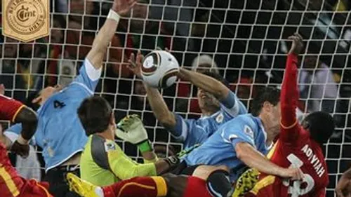
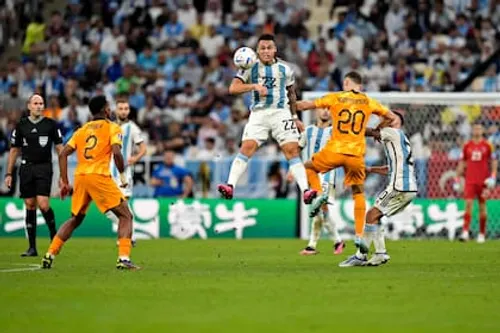

Introducción
A lo largo de la historia de los Mundiales de fútbol hubo partidos que quedaron en la memoria por sus grandes polémicas. Algunas decisiones arbitrales, goles dudosos y jugadas antideportivas provocaron discusiones entre jugadores, entrenadores y aficionados.
En esta página conoceremos algunos de los encuentros más polémicos, explicando qué ocurrió, por qué fueron discutidos y cómo influyeron en el desarrollo del partido.
Partidos históricos y polémicos
01. Inglaterra vs. Alemania - Mundial 1966
30 de julio de 1966
¿Por qué fue polémico?
Durante la final, el inglés Geoff Hurst realizó un disparo que golpeó el travesaño y rebotó cerca de la línea de gol. El árbitro asistente consideró que la pelota había entrado y el árbitro concedió el gol, aunque hasta hoy existen discusiones sobre si cruzó completamente la línea.
¿Cómo afectó al partido?
El gol puso a Inglaterra en ventaja durante la prórroga. Alemania tuvo que buscar el empate, mientras que Inglaterra aprovechó los espacios para marcar otro gol y ganar la final.
02. Argentina vs. Inglaterra - Mundial 1986
22 de junio de 1986
¿Por qué fue polémico?
Diego Maradona marcó el primer gol utilizando su mano izquierda para golpear la pelota por encima del arquero inglés Peter Shilton. El árbitro no observó la infracción y concedió el gol. Maradona luego describió la jugada como la "Mano de Dios".
¿Cómo afectó al partido?
El gol permitió que Argentina se pusiera en ventaja. Inglaterra tuvo que intentar remontar el resultado. Poco después, Maradona marcó el segundo gol, considerado uno de los mejores de la historia.
03. Italia vs. Corea del Sur - Mundial 2002
18 de junio de 2002
¿Por qué fue polémico?
El árbitro ecuatoriano Byron Moreno tomó varias decisiones discutidas durante el encuentro. Anuló un gol de Italia por fuera de juego y expulsó a Francesco Totti por una supuesta simulación. La decisión sobre Totti fue especialmente cuestionada por los italianos.
¿Cómo afectó al partido?
Italia tuvo dificultades para mantener su ventaja y terminó perdiendo durante el tiempo suplementario. La expulsión de Totti y las decisiones arbitrales aumentaron la tensión del encuentro.
04. Alemania vs. Inglaterra - Mundial 2010
27 de junio de 2010
¿Por qué fue polémico?
Durante el partido, Frank Lampard realizó un disparo que pegó en el travesaño y rebotó claramente detrás de la línea de gol. Sin embargo, el árbitro no concedió el tanto porque no pudo observar que la pelota había entrado.
¿Cómo afectó al partido?
Inglaterra podría haber empatado 2-2 antes del descanso. En cambio, Alemania mantuvo la ventaja y posteriormente amplió el resultado hasta ganar por 4-1.
05. Uruguay vs. Ghana - Mundial 2010
2 de julio de 2010
¿Por qué fue polémico?
En el último minuto de la prórroga, Luis Suárez detuvo con las manos un remate de Ghana que estaba por entrar al arco. El árbitro sancionó penal y expulsó al jugador uruguayo.
¿Cómo afectó al partido?
Ghana tuvo la oportunidad de ganar el encuentro, pero Asamoah Gyan falló el penal al estrellar la pelota en el travesaño. Finalmente, Uruguay ganó en la tanda de penales y avanzó a semifinales.
06. Argentina vs. Países Bajos - Mundial 2022
9 de diciembre de 2022
¿Por qué fue polémico?
El partido estuvo marcado por fuertes discusiones, faltas y enfrentamientos entre los jugadores. Uno de los momentos más polémicos ocurrió cuando Leandro Paredes pateó la pelota hacia el banco de suplentes neerlandés, provocando una reacción de los jugadores rivales.
¿Cómo afectó al partido?
La tensión aumentó durante el encuentro y hubo numerosos enfrentamientos. Países Bajos consiguió empatar el partido en los últimos minutos y finalmente Argentina ganó en la tanda de penales.